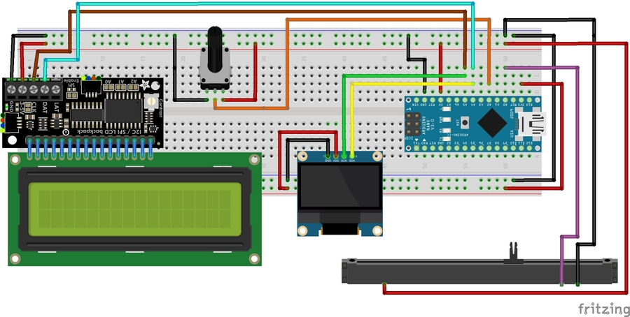
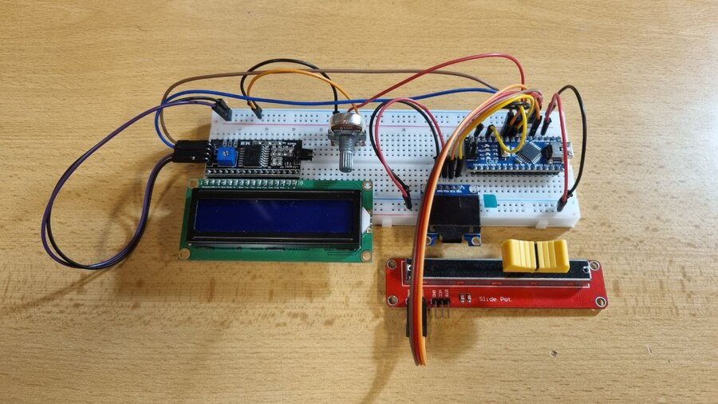
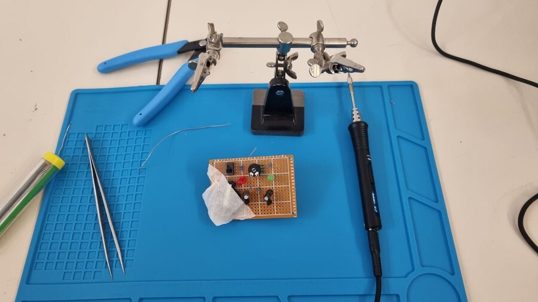

Week 6: Sensors and input devices
Creating Atari Breakout game on OLED and LCD dispays
Creating Atari Breakout game on oled and lcd dispays
Atari Breakout game
Inspiration
I missed coding in C++, so this time I wanted to create a project where I would code a lot. A game is a great example. We’ve got a linear potenciometer in our JVC kits that can be used as an input for something. And I was hit by the idea: to replicate the old legendary classic - Atari Breakout game. Firstly I wanted to display it on a LCD display, but after the first try I decided to switch to the OLED display that was smaller but had appropriate libraries for drawing and much better characterisitcs.
Scheme
I used these components in my project:
- Arduino Nano R3
- OLED 0.96" 128x64 I2C display
- Slide pot 10kohm
- Rotary potentiometer B10kohm
- I2C adapter for a LCD 1602 display
- LCD 1602 display
- Wires and Mini USB cabel
Here is the circuit designed in Fritzing:

and how it looks in the real life:

Connections and initialization
The I2C adapter(black module connected to the LCD) changes multiple LCD pins to only 4 pins for an I2C communication - GND, Vcc(5V), CLK(SCL) and DAT(SDA). Also you can see the same pins on the OLED display - GND, Vdd(3.3V), SCK(SCL) and SDA. SCL pins of both displays are connected to the A5 Arduino pin and SDA pins to the A4 pin. That is the reason why I chose the I2C communication between displays and Arduino is the fact that it’s much more convenient and implies the use of fewer cables.
Firstly, I tried to use Adafruit libraries for both LCD and OLED display. But it didn’t work for me for some reason. So for the OLED screen I used U8g2 and for the LCD 1602 I used LiquidCrystal_I2C. Please, note: both displays must have different addresses and be initialised in order work properly!
U8G2_SSD1306_128X64_NONAME_F_HW_I2C u8g2(U8G2_R0, /* reset=*/ U8X8_PIN_NONE, SCK_OLED_PIN, SDA_OLED_PIN);
LiquidCrystal_I2C lcd(0x27, 16, 2);
And after that in *setup()*:
u8g2.begin();
lcd.begin(16, 2);
When you don’t do that, both displays might not turn on.

Main code
//....It is only a part of the code. All the code will be provided at the bottom of the page soon....
#include <Arduino.h>
#include <Wire.h>
#include <Adafruit_GFX.h>
#include <U8g2lib.h>
#include <LiquidCrystal_I2C.h>
#include <stdlib.h>
#include <time.h>
#define DTB_POT_PIN 0
#define DATA_ROT_POT_PIN 2
#define SDA_OLED_PIN 4
#define SCK_OLED_PIN 5
#define SCREEN_WIDTH 128
#define SCREEN_HEIGHT 64
#define OLED_RESET -1
U8G2_SSD1306_128X64_NONAME_F_HW_I2C u8g2(U8G2_R0, /* reset=*/ U8X8_PIN_NONE, SCK_OLED_PIN, SDA_OLED_PIN);
LiquidCrystal_I2C lcd(0x27, 16, 2);
void paddleDirection(uint8_t arr[]);
void resetValues();
void updateHistory(uint8_t history[], uint8_t newValue);
void drawBlocks();
void drawBlock(uint8_t row, uint8_t blockIndex);
bool checkCollision(uint8_t blockX, uint8_t blockY);
void displayGameState();
uint8_t countAllCharacters(const String& str);
void displayPageState(const String& str, uint16_t pageDelay);
enum GameState {
GAME_START,
GAME_PLAYING,
GAME_OVER
};
enum BlockState {
ACTIVE,
HIT
};
enum PaddleState {
LEFT,
RIGHT,
STILL
};
//....define and initialize other variables....
class Ball {
//....define variables and methods....
}
void setup() {
// Serial.begin(9600);
pinMode(DTB_POT_PIN, INPUT);
pinMode(DATA_ROT_POT_PIN, INPUT);
u8g2.begin();
lcd.begin(16, 2);
lcd.backlight();
lcd.setCursor(0, 0);
lcd.print("Score: ");
lcd.setCursor(0, 1);
lcd.print("Speed: ");
lcd.setCursor(9, 1);
lcd.print("pix/fr");
int sensorValue = analogRead(A3); // A3 is assumed to be unconnected
srand(sensorValue);
}
void loop() {
// Serial.println(firstCollision);
switch (gameState) {
case GAME_START:
displayGameState();
gameState = GAME_PLAYING;
lcd.setCursor(7, 0);
lcd.print(" ");
lcd.setCursor(7, 0);
lcd.print(score);
lcd.setCursor(7, 1);
lcd.print(" ");
lcd.setCursor(7, 1);
lcd.print(ball.getSpeed());
break;
case GAME_PLAYING:
potValue = analogRead(DTB_POT_PIN);
potRotValue = analogRead(DATA_ROT_POT_PIN);
ball.setSpeed(map(potRotValue, 0, 1023, 1, 6));
paddlePosition = map(potValue, 0, 1023, 0, 128 - paddleLength);
lcd.setCursor(7, 0);
lcd.print(" ");
lcd.setCursor(7, 0);
lcd.print(score);
lcd.setCursor(7, 1);
lcd.print(" ");
lcd.setCursor(7, 1);
lcd.print(ball.getSpeed());
u8g2.firstPage();
do {
u8g2.drawBox(paddlePosition, SCREEN_HEIGHT - paddleWidth, paddleLength, SCREEN_HEIGHT);
ball.draw();
drawBlocks();
} while (u8g2.nextPage());
break;
case GAME_OVER:
displayGameState();
resetValues();
gameState = GAME_START;
break;
}
delay(1);
}
Result
Here you can see the result tat I’ve got. You can set a speed using rotary potenciometer and to move a paddle with slide pot. Also you can see a Score on the LCD display that is reset every round. Enjoy!